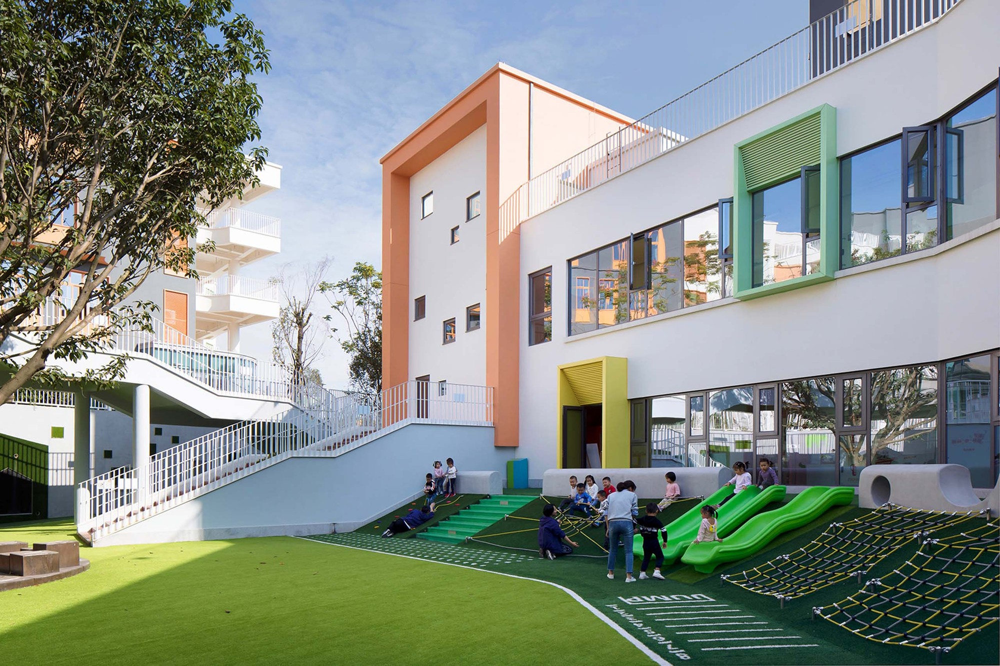

We strive to ensure that every child reaches their fullest potential. We believe that when your child becomes a member of St Alphonsus’ community they are beginning a learning journey which will lead them to being fully prepared for life’s challenges and successes. The relationship between parents, staff and children is the foundation of life at St Ann's. As these relationships work effectively our children will become
mature, confident, life-long learners.